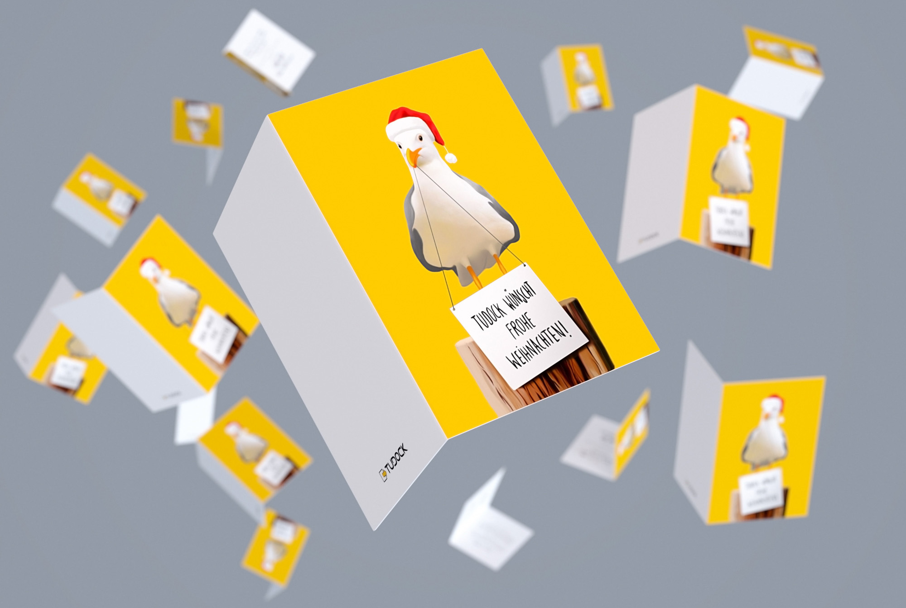
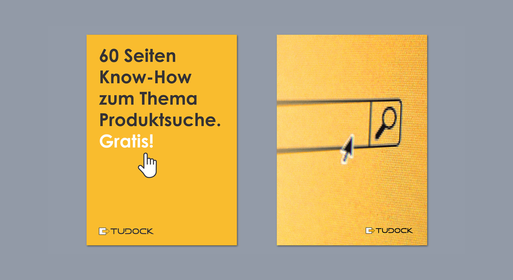
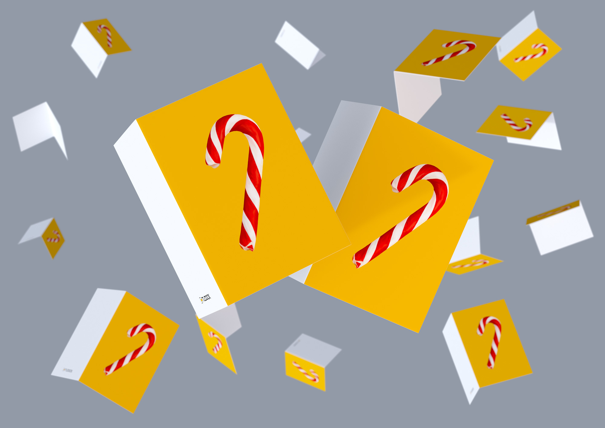

Tudock
For Hamburg based e-commerce agency TUDOCK I created christmas cards, flyers, presentations and e-books .
Für die Hamburger E-Commerce Agentur TUDOCK habe ich Weihnachtskarten, Flyer, Präsentationen und E-Books gestaltet.


